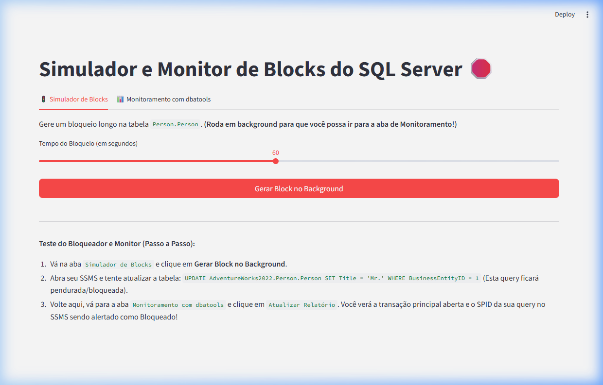
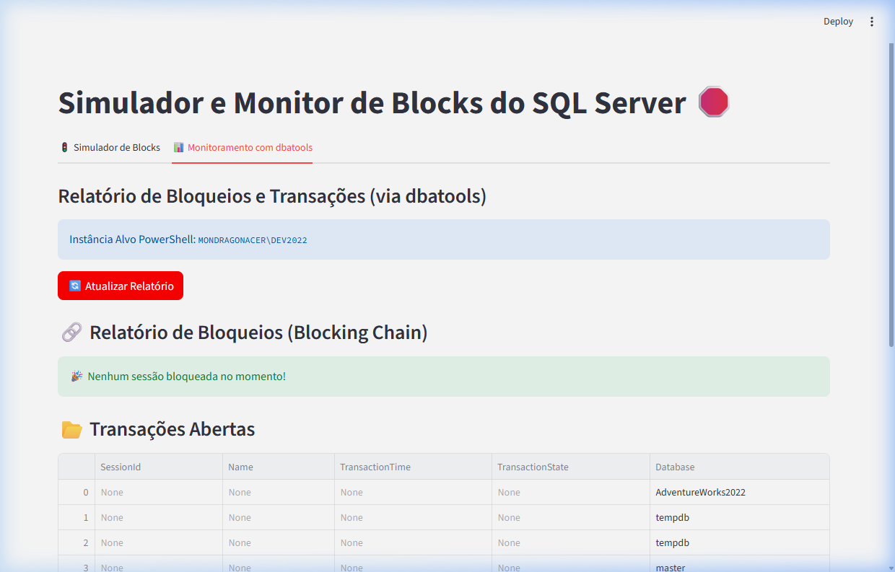

Documentação oficial da aplicação interativa para simulação de bloqueios (locks) no SQL Server e monitoramento avançado via T-SQL (DMVs).
A aplicação oferece uma interface fluida baseada em Streamlit capaz de gerar e diagnosticar problemas de bloqueio (blocking chains) dentro de um ambiente SQL Server local. Foi projetada para ser uma ferramenta robusta para estudos, testes de gargalos de concorrência, e homologação de ambientes.
O fluxo core do sistema acontece paralelizando transações isoladas via interface gráfica (para que não travem a aplicação em Python da UI) enquanto a camada de monitoramento interroga o SQL Server executando queries avançadas nas DMVs (Dynamic Management Views) para gerar relatórios em tempo real.
A primeira seção serve para iniciar a transação problemática. O simulador se conecta ao banco de dados AdventureWorks2022 como usuário administrador (sa) e executa um comando inofensivo de UPDATE numa tabela crítica (Person.Person).
A transação então usa o comando WAITFOR DELAY para paralisar e reter o Exclusive Lock (X) por um tempo ditado por você através do componente deslizante (Slider), variando entre 10 e 120 segundos.

Qualquer sistema DBA avançado precisa de ferramentas assertivas para diagnóstico. Esta divisão da aplicação realiza consultas diretas nas visões de gerenciamento dinâmico (DMVs) do SQL Server.
🌟 Evolução Arquitetural (De dbatools para DMVs): Em versões anteriores, o sistema dependia da execução de scripts PowerShell em background chamando o módulo dbatools (Get-DbaProcess, Get-DbaOpenTransaction). Para aumentar o desempenho e reduzir a complexidade, a aplicação foi refatorada e agora utiliza exclusivamente consultas T-SQL nativas (via PyODBC) acessando as DMVs. Isso elimina o overhead do PowerShell e exibe os dados quase que instantaneamente.
Ao clicar em "Atualizar Relatório", o backend em Python executa consultas T-SQL avançadas e utiliza a biblioteca pandas para construir as métricas e tabelas de forma interativa:
sys.dm_exec_requests e sys.dm_exec_sessions.sys.dm_exec_sql_text, as queries exatas que estão causando os locks (bloqueadores e vítimas).sys.dm_tran_active_transactions.
.\venv\Scripts\streamlit run app.pySELECT * FROM AdventureWorks2022.Person.Person WHERE BusinessEntityID = 1;